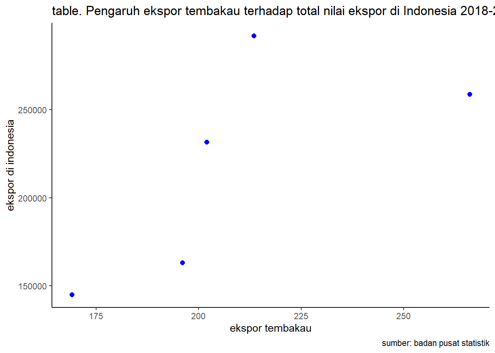

library(tidyverse)
library(readxl)Pengaruh Ekspor Tembakau Terhadap Total Nilai Ekspor di Indonesia
Metode Penelitian Politeknik APP Jakarta

1 Pendahuluan
1.1 Latar belakang
Ekspor merupakan bagian dari perdagangan internasional yang dimana merupakan salah satu peran penting dalam perekonomian suatu negara. Di Indonesia sendiri ekspor memainkan peran kunci dalam perekonomian negara ini. Dengan sumber daya alam yang melimpah seperti kelapa sawit, kopi, tambang, tembakau, dll.
Tembakau merupakan salah satu komoditi ekspor di Indonesia.Indonesia sendiri merupakan salah satu produsen utama tembakau di dunia dan juga merupakan negara penghasil utama untuk ekspor tembakau. Kenaikan ekspor tembakau Indonesia dalam beberapa tahun terakhir telah memberikan dampak signifikan pada penerimaan bea cukai negara-negara tujuan ekspor.
Perkembangan ekspor tembakau di indonesia dari tahun ke tahun juga sangat mempengaruhi nilai atau volume ekspor di indonesia. Penelitian ini dilakukan untuk melihat konstribusi tembakau terhadap total ekspor di Indonesia.
1.2 Ruang lingkup
Dalam penelitian ini mengambil objek penelitian dari Badan Pusat Statistik. Ruang lingkup penelitian ini terdapat 2 variabel antara lain nilai ekspor tembakau dan total nilai ekspor di indonesia. Data yang digunakan adalah data yang bersifat time series yaitu dalam kurun waktu 2018-2022 dengan satuan yang telah diubah menjadi USD.
1.3 Rumusan masalah
Seberapa besar nilai ekspor tembakau terhadap nilai ekspor di indonesia?
Konstribusi tembakau bagi ekspor di Indonesia?
1.4 Tujuan dan manfaat penelitian
Berdasarkan latar belakang dan permasalahan yang ada maka tujuan dari penelitian ini adalah untuk mengetahui pengaruh ekspor tembakau terhadap nilai ekspor di Indonesia dan manfaat dari penelitian ini untuk mengetahui seberapa besar konstribusi komoditi tembakau pada ekspor di Indonesia.
1.5 Package
Packages yang digunakan di penelitian ini adalah antara lain sebagai berikut :
2 Studi pustaka
- Ekspor
Ekspor adalah proses menjual dan mengirimkan barang atau jasa dari satu negara ke negara lain. Dalam konteks ekonomi, kegiatan ekspor sangat penting karena dapat meningkatkan pendapatan negara, menciptakan lapangan kerja, dan mengakses pasar internasional untuk produk-produk tertentu. Di Indonesia, sektor ekspor melibatkan berbagai komoditas dan produk, yang berkontribusi pada pertumbuhan ekonomi negara.
- Tembakau
Tembakau adalah salah satu komoditi utama Indonesia yang diekspor. Negara ini dikenal sebagai salah satu produsen tembakau terbesar di dunia. Ekspor tembakau mencakup berbagai jenis produk tembakau, termasuk daun tembakau mentah dan produk tembakau olahan seperti kretek. Meskipun memiliki dampak ekonomi yang besar, industri tembakau juga menjadi fokus perhatian terkait masalah kesehatan dan regulasi internasional terkait tembakau.
3 Metode penelitian
3.1 Data
Berikut adalah data yang digunakan sebagai objek penelitian, data dibawah ini merupakan tahun, data nilai ekspor tembakau , dan total nilai ekspor di Indonesia dengan satuan USD
| Tahun | Ekspor Tembakau | Ekspor di Indonesia |
|---|---|---|
| 2018 | 169.066 | 145,134.5 |
| 2019 | 201.976 | 231,609.5 |
| 2020 | 196.007 | 163,191.8 |
| 2021 | 213.408 | 291,904.3 |
| 2022 | 266.026 | 258,818.9 |
Penelitian ini menggunakan data sekunder dengan bentuk data time series 2018-2022, data yang dipakai ialah data yang telah diolah dengan sumber Badan Pusat Statistik dan Trade map.
setwd('D:/agatha_uas')
dat<-read_excel('data.xlsx')
library('dplyr')
reg1<-lm(x~y,data=dat)
ggplot(data=dat,aes(x=x,y=y)) + geom_point (color="blue",size=2) + labs (title="table. Pengaruh ekspor tembakau terhadap total nilai ekspor di Indonesia 2018-2022", x ="ekspor tembakau", y="ekspor di indonesia", caption="sumber: badan pusat statistik") + theme_classic()
3.2 Metode analisis
Metode yang dipilih adalah regresi univariat atau Ordinary Least Square (OLS) dengan 1 variabel independen. Penelitian ini bermaksud mencari hubungan antara ekspor tembakau dan total nilai ekspor . Spesifikasi yang dilakukan adalah:
\[ y_{t}=\beta_0 + \beta_1 x_t+\mu_t \] di mana \(y_t\) adalah ekspor tembakau dan \(x_t\) adalah total nilai ekspor di Indonesia.
4 Pembahasan
4.1 Pembahasan masalah
Sumber yang diambil berasal dari Badan Pusat Statistik dan Trade Map . Data tersebut digabungkan dan menghasilkan regresi seperti berikut
#import dataset
library( readxl )
dat<-read_excel('data.xlsx')
head(dat)# A tibble: 5 × 2
x y
<dbl> <dbl>
1 169. 145135.
2 202. 231610.
3 196. 163192.
4 213. 291904.
5 266. 258819.4.2 Analisis masalah
Hasil regresi nya adalah
reg1<-lm(x~y,data=dat)
summary(reg1)
Call:
lm(formula = x ~ y, data = dat)
Residuals:
1 2 3 4 5
-11.363 -12.650 8.437 -25.063 40.639
Coefficients:
Estimate Std. Error t value Pr(>|t|)
(Intercept) 1.230e+02 5.344e+01 2.302 0.105
y 3.955e-04 2.373e-04 1.666 0.194
Residual standard error: 29.66 on 3 degrees of freedom
Multiple R-squared: 0.4807, Adjusted R-squared: 0.3076
F-statistic: 2.777 on 1 and 3 DF, p-value: 0.19425 Kesimpulan
Dari hasil regresi dapat dilihat bahwa ekspor tembakau di Indonesia berpengaruh dengan total nilai ekspor di Indonesia. Dimana dalam setiap penurunan yang terjadi di ekspor tembakau , nilai ekspor di Indonesia juga menurun yang artinya komoditi tembakau memberikan konstribusi besar terhadap ekspor di Indonesia.
6 Referensi
Adrian Permana, Dwi Khaira Ramdhani & Ricky Firmansyah (2023).Analisis Dampak Kenaikan Ekspor Tembakau Indonesia terhadap Bea Cukai negara. file:///C:/Users/bcd/Downloads/Metta+Vol2+No1+pp+1177-1184+347.pdf
Badara Shofi Dana & Achmad Fawaid Hasan (2016). Analisis Kinerja Ekspor Tembakau di Indonesia. file:///C:/Users/bcd/Downloads/3730-1-7388-1-10-20161228.pdf
Lembaga tembakau jember. https://www.bi.go.id/seki/tabel/TABEL5_10.pdf